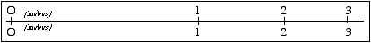
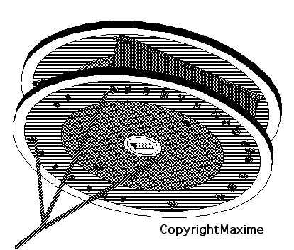

Force 10
par Maxime ROUSSELLE
Je n'ai pas construit récemment de nouveau cerf-volant, et je ne voudrais pas publier de plans pour un machin que quelqu'un voudrait construire et qui ne marcherait pas. Désireux cependant de contrer la tendance proclamée à la maigreur du Lucane, et répondant à l'appel de son rédacteur, je vous transmets ce projet. Tous droits sont réservés pour tous pays de la Terre, de Vénus et de Mars (je verrai plus tard pour une extension), et toute personne le construisant sans autorisation écrite signée devant notaire s'expose, outre les embêtements inhérents à la construction et au vol, à des poursuites et à des dommages et intérêts importants et en plus en Euros.
L'idée est de faire un cerf-volant pour vent vraiment très fort. Le plan général est un peu dérivé de réalisations de A.C. (je dissimule son nom pour éviter les poursuites, mais de toutes façons, je ne suis pas le premier à le plagier), en employant cependant des matériaux un peu plus sérieux.
La surface portante est constituée de deux plaques de fonte circulaires que l'on trouvera facilement au hasard des rues (ne dîtes pas que je vous ai dit ça, ou les Ponts et Chaussées me tuent). Ne vous laissez cependant pas aller à l'incivisme et placez un couvercle de contre-plaqué sur les trous laissés. Du contre-plaqué de 2,5 mm est largement suffisant (tant que personne ne marche dessus). Il est recommandé de le peindre en couleur sombre et discrète. Les plaques d'égout elles-mêmes existent en différents diamètres, mais une année de calculs de portance et de simulations informatiques en soufflerie virtuelle ont montré que, plus que la taille est grande, plus que ça porte. Et comme le poids croît moins vite que le carré de la surface car l'épaisseur relative est plus forte dans les petites tailles, j'ai choisi un diamètre typique de 1 mètre. Vous pourrez ainsi ajuster facilement le plan au modèle de plaque dont vous disposerez, à condition de savoir multiplier par 1. Pour vous éviter les sempiternels calculs de mise à l'échelle, je vous joins un abaque géométrique dont voici le mode d'emploi : chercher la taille correspondant à votre plaque sur la ligne supérieure, et lire en correspondance sur la ligne inférieure la taille du modèle à réaliser :

Outre les plaques d'égout (je conseille celles des Forges de Pont-à-Mousson qui outre leurs bonnes qualités de vol, ajouteront une touche "collection" à votre cerf-volant), il faut disposer de deux poutrelles en I et en acier d'une longueur de 80 cm environ. Une poutrelle de 1,60 m peut être utilisée, à condition de la couper en deux parties égales. Vous pouvez utiliser à cette fin une scie à métaux, si votre cerf-volant n'est pas trop grand et si vous êtes patient et costaud. Sinon, un chalumeau est indispensable. Si vous disposez de ce dernier, vous pourrez simplifier la construction en remplaçant les boulons d'assemblage par des soudures qui auront l'avantage de donner un aspect plus léger et aérien à l'ensemble.
Pour revenir aux poutrelles, elles seront assemblées parallèlement sous les plaques, d'une part pour les raidir, d'autre part pour servir de dérives verticales, très importantes pour la stabilité du cerf-volant. Si vous ne pouvez souder, deux solutions :
• utilisez des tiges filetées traversant toute la structure. Cette solution facilite le pliage en fin de vol et le rangement dans votre véhicule, tout en vous assurant de retrouver un cerf-volant bien réglé à chaque fois ;
• vous pouvez aussi vous servir de boulons, qui rendent le montage un peu plus fastidieux. Ils allègent un peu la structure, mais celle-ci risque de devenir un peu trop souple et il faudra veiller à une parfaite symétrie pour obtenir un vol correct.
Dans tous les cas, prenez un diamètre égal au 1/50ème du diamètre de la plaque, soit à peu près 20 mm dans notre cas, ce qui devrait suffire pour les forces de vent de l'hémisphère nord.

Voici une "vue d'artiste" du projet. Ci-dessous, le plan détaillé qui reste évolutif en fonction des matériaux dont vous pourrez disposer.

Le bridage est 3 points. Il est réalisé en câble toronné de diamètre 17 mm. Il est assemblé à la structure au moyen de pièces à réaliser vous même, à trouver chez un ship-chandler ou à faire faire par un atelier de Marine selon un modèle destiné aux haubans. Mais j'ai confiance en le sens du bricolage des cervolistes du CVCF. Ces pièces seront reprises sur les boulons de structure. Un boulon supplémentaire devra être ajouté à 12,52 cm en arrière du centre. La bride arrière sera peu tendue et utile seulement pour éviter que le cerf-volant ne se mette trop à plat quand vous lâcherez du fil.
Vous pourrez également ajouter une queue. Celle-ci sera facilement constituée à partir d'une chaîne d'ancre légère. Laisser l'ancre au bout ajoutera un "plus" pittoresque et original à votre réalisation.
J'attends des nouvelles des cerfs-volants réalisés et des essais qui auront lieu. Prévoyez quand même pour cela de bien dégager la zone de chute possible, mais le vent nécessaire aura sans doute déjà agi en ce sens.
MAXIME
PS : si vous croyez qu'on ne peut pas réaliser de CV tout-métal, demandez à François qui a bien fait voler le sien, aussi incroyable que cela paraisse ! A quand ton article, François ?